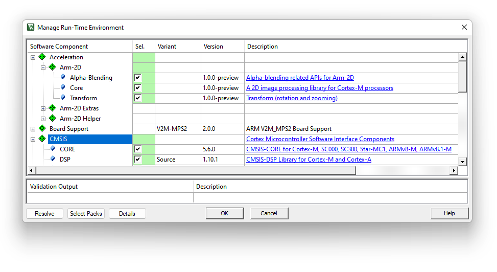
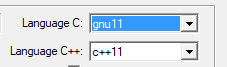
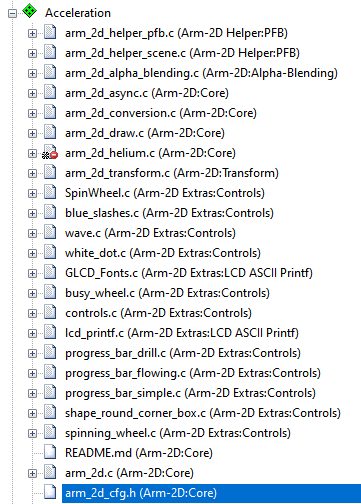

|
Arm-2D
2D Image Processing Library for Cortex-M Processors
|


|
|
Arm-2D
2D Image Processing Library for Cortex-M Processors
|
|
This document describes how to deploy the Arm-2D library to your existing MDK projects. If you are not familiar with Arm-2D, please start from the README first.
There are three methods to get Arm-2D:
Cloning Arm-2D repository on Github using the following command line:
Checking for Updates in pack-installer and installing the latest Arm-2D packs as shown in Figure 1-1 and Figure 1-2
Figure 1-1 Check for Updates in Pack Installer

Figure 1-2 Install Arm-2D in Pack Installer

Open the Run-Time Environment configuration dialog using menu "Project->Manage->Run-Time Environment" as shown in Figure 2-6.
Figure 2-6 Open Run-Time Environment Dialog 
Expand Acceleration and select Core, Alpha-Blending and Transform under Arm-2D as shown below. Make sure you also select CMSIS-CORE and CMSIS-DSP.
Figure 2-7 Select Arm-2D in RTE 
Enable C11 and GNU extension support in C/C++(AC6) configurations:
Figure 2-3 Enable "gnu11" in Arm Compiler 6

Include the header file arm_2d.h in your source code where you want to use the library:
Initialize Arm-2D by calling function arm_2d_init() :
Expand Acceleration in the project view and open arm_2d_cfg.h as shown in Figure 2-8.
Figure 2-8 Find arm_2d_cfg.h in the project view

Open the Configuration Wizard and check options available for Arm-2D
Figure 2-9 Configuration Wizard for Arm-2D

NOTE: If you want to support CCCA8888 (i.e. RGBA8888), please selet the Enable support for accessing individual colour channels.
Suppose you want to develop GUI applications directly with Arm-2D. In that case, it implies that you not only use Arm-2D APIs for the framebuffer-based low-level 2D image processing but also want to display the processed result on a screen. An ordinary GUI software stack will provide a dedicated service for connecting a target screen, and users must implement a driver or adapter between the hardware and the service. Such a service usually allows people to refresh the whole screen with a petite frame buffer called partial frame buffer (PFB). This feature is vital for resource-constraint embedded platforms. Arm-2D provide a similar feature through a helper service called Display Adapter Service.
Before we start, we have to prepare a low-level flushing function called Disp0_DrawBitmap(). Its prototype is shown below:
Here as shown in Figure 3-1:
x,y are the absolute coordinates in the target screenwidth andheight describe the size of the rectangular target areabitmap points to a framebuffer which holds all pixels in a rectangular area with the given width and height.Figure 3-1 The Scheme of the Low Level Flushing Interface

Suppose the display RAM of your LCD has been mapped into internal 4G memory space. An example of Disp0_DrawBitmap() might look like this:
Here, disp_ram points to the memory space reserved for the LCD display RAM.
IMPORTANT: When exiting the Disp0_DrawBitmap(), Arm-2D assumes that the target frame buffer has already been flushed to the target screen.
Table 3-1 Summary
| Projects | Description | Folder | Note |
|---|---|---|---|
| benchmark | It is an ALL-IN-ONE example that demonstrates almost all features provided by Arm-2D. By setting different PFB sizes, you can evaluate the 2D image processing capability for the target system. | examples/benchmark | Can be used as benchmark. |
| watch_panel | It is a dedicated example of a smart-watch-like panel. A pointer and two gears rotate at different angular velocities on a translucent watch panel with a dynamic background. | examples/watch_panel | Can be used as benchmark |
| [template][bare-metal][pfb] | It is a project template for the bare-metal environment. | examples/[template][bare-metal][pfb] | Project Template |
| [template][cmsis-rtos2][pfb] | It is a project template for the RTOS environment, which use CMSIS-RTO2 as an example to show how Arm-2D can work with an RTOS. | examples/[template][cmsis-rtos2][pfb] | Project Template |